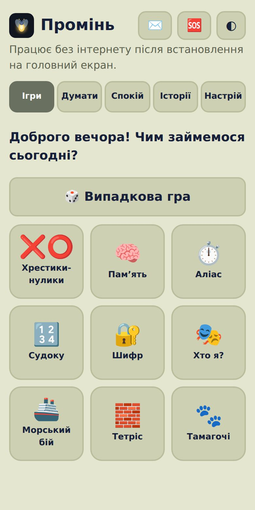
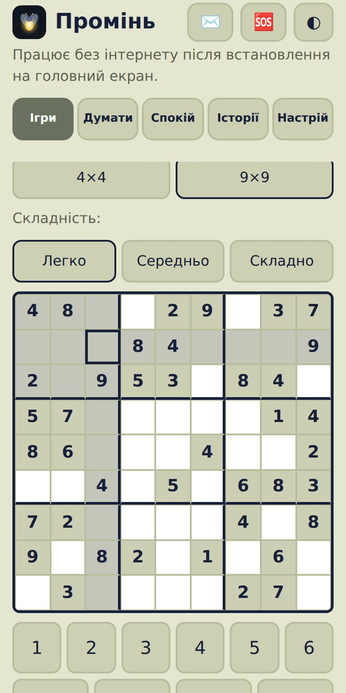
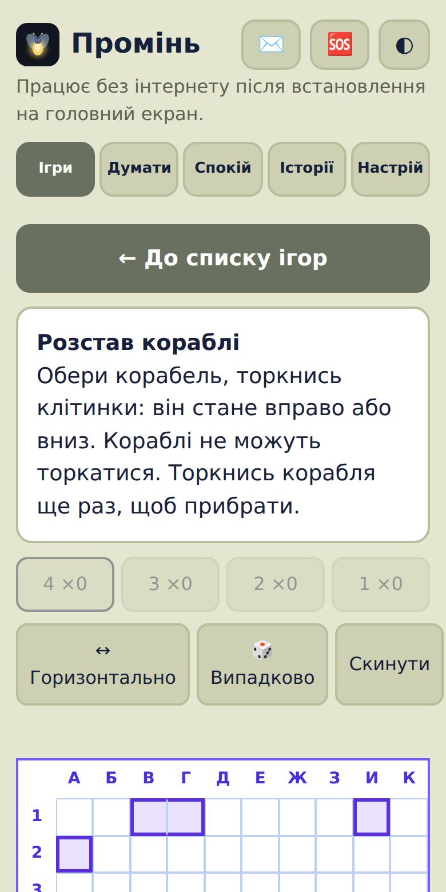
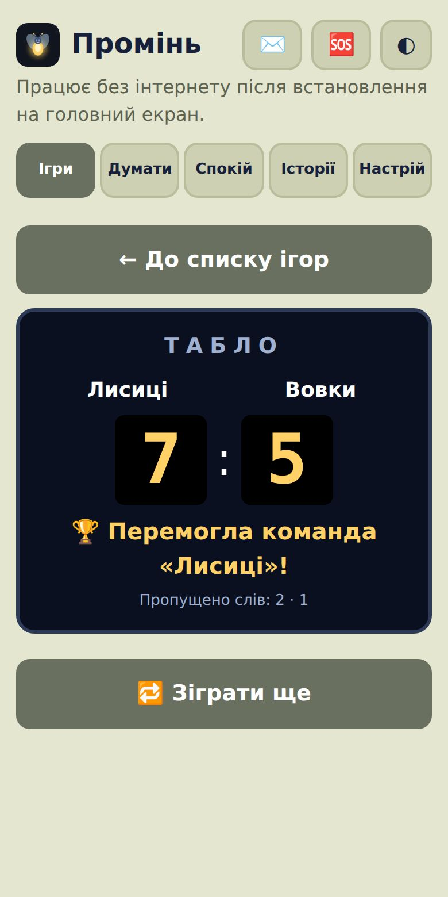
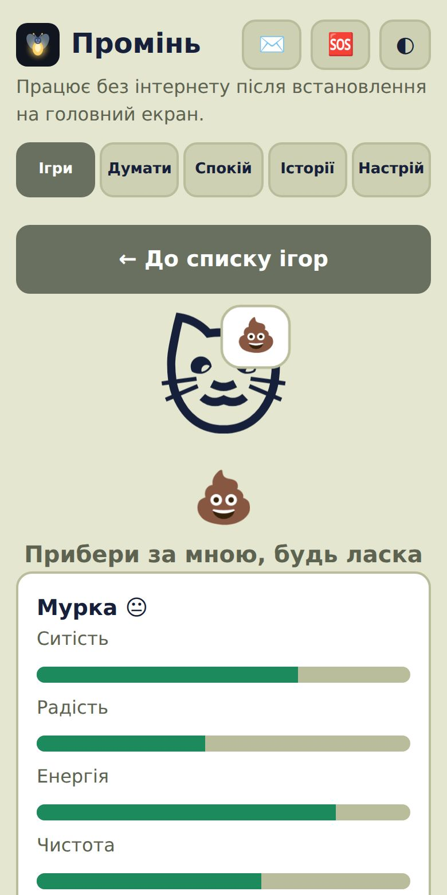
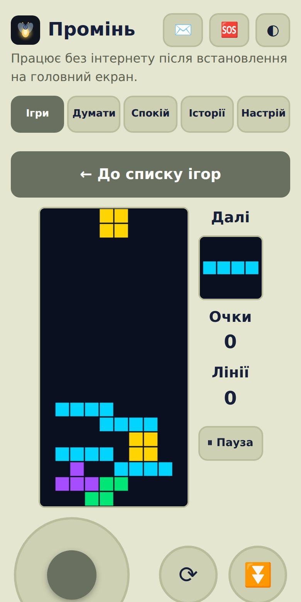

Світлячок у кишені: ігри для дітей, які працюють навіть без зв’язку
Безкоштовний застосунок для дітей 7–15 років. Без реєстрації, реклами та збору даних. Ідеально для укриття, дороги, черги чи хвилини, коли потрібно відволіктися й заспокоїтися.
Бачиш цей код на екрані комп’ютера чи плакаті? Наведи камеру телефона. Якщо ти вже на телефоні, QR не потрібен: натисни кнопку вище.
🍎 Встановлення на iPhone
На iPhone застосунок встановлюється з Safari за хвилину. Подивись коротке відео:
- Відкрий сторінку застосунку в Safari (не у вбудованому браузері Telegram чи інших додатків).
- Натисни «⋯» унизу праворуч і обери «Поширити». (На старіших iPhone внизу є кнопка «Поділитися»: квадрат зі стрілкою.)
- Натисни «Переглянути ще» (стрілка вниз) і обери «На Початковий екран».
- Натисни «Додати» вгорі праворуч. Іконка «Промінь» з’явиться на екрані.
Другий телефон для QR-коду не потрібен. Достатньо натиснути кнопку нижче на своєму iPhone.
🤖 Встановлення на Android
- Натисни кнопку й завантаж файл promin.apk.
- Відкрий завантажений файл. Android попросить дозволити встановлення з цього джерела: дозволь тільки для цього разу.
- Натисни «Установити» й відкрий «Промінь».
Простіше: відкрий сторінку застосунку в Chrome і натисни кнопку «Встановити застосунок», файл не знадобиться.
Що всередині
🎮
9 ігор
Хрестики-нулики, «Пам’ять», «Аліас», судоку, шифр, «Хто я?», морський бій, тетріс і тамагочі.🧩
Загадки й «Правда?»
Українські загадки та цікаві факти з поясненнями.🧭
Квест та історії
Квест із вибором і спільна історія, яку пишуть друзі по черзі.🌿
Спокій
Дихання з м’яким звуком і вправи «тут і зараз» із галочками.🆘
Екстрені номери
112, 101, 102, 103, дитяча лінія й особисті контакти одним натисканням.📴
Без інтернету
Після встановлення все працює й без зв’язку.Як виглядає






Безпечно для дітей
- Без реклами й без реєстрації.
- Прогрес, нотатки, контакти й улюбленець зберігаються тільки на телефоні.
- Немає вільного чату з незнайомими людьми.
- Відгук авторці надсилається лише якщо ви самі його напишете.